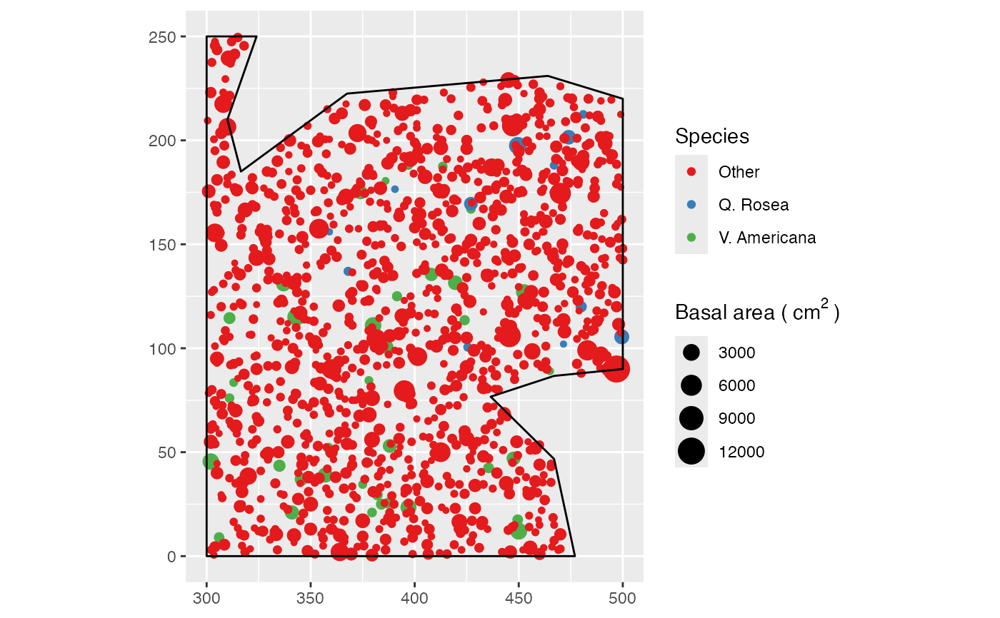
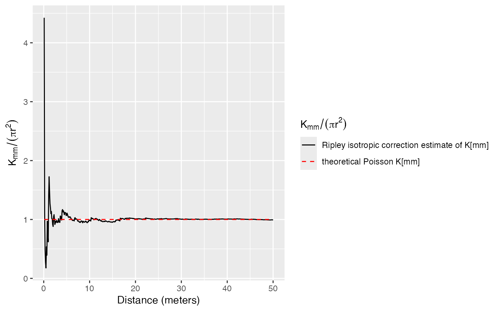

Kmmhat.RdEstimates of the Kmm function
Kmmhat(X, r = NULL, ReferenceType = "", CheckArguments = TRUE)A weighted, marked, planar point pattern (wmppp.object).
A vector of distances. If NULL, a sensible default value is chosen (512 intervals, from 0 to half the diameter of the window) following spatstat.
One of the point types. Others are ignored. Default is all point types.
Logical; if TRUE, the function arguments are verified. Should be set to FALSE to save time in simulations for example, when the arguments have been checked elsewhere.
The Kmm function is used to test the independence of marks.
An object of class fv, see fv.object, which can be plotted directly using plot.fv.
Penttinen, A., Stoyan, D. and Henttonen, H. M. (1992). Marked Point Processes in Forest Statistics. Forest Science 38(4): 806-824.
Penttinen, A. (2006). Statistics for Marked Point Patterns. in The Yearbook of the Finnish Statistical Society. The Finnish Statistical Society, Helsinki: 70-91.
The function is computed using markcorrint in spatstat.
Lmmhat, LmmEnvelope, markcorrint
data(paracou16)
# Keep only 50% of points to run this example
X <- as.wmppp(rthin(paracou16, 0.5))
autoplot(X,
labelSize = expression("Basal area (" ~cm^2~ ")"),
labelColor = "Species")

# Calculate Kmm
r <- seq(0, 30, 2)
(Paracou <- Kmmhat(X, r))
#> Function value object (class ‘fv’)
#> for the function r -> K[mm](r)
#> .............................................................................
#> Math.label Description
#> r r distance argument r
#> theo {K[mm][]^{pois}}(r) theoretical Poisson K[mm](r)
#> iso {hat(K[mm])[]^{iso}}(r) Ripley isotropic correction estimate of K[mm](r)
#> .............................................................................
#> Default plot formula: .~.x
#> where “.” stands for ‘iso’, ‘theo’
#> Recommended range of argument r: [0, 50]
#> Available range of argument r: [0, 50]
#> Unit of length: 1 meter
# Plot
autoplot(Paracou, ./(pi*r^2) ~ r)
